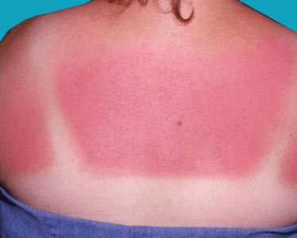
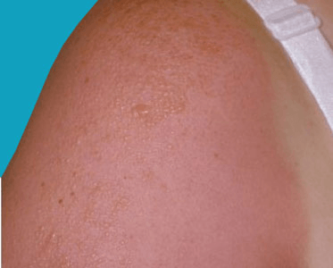

Sunburn — red, painful skin that feels hot to the touch — usually appears within a few hours after too much
exposure to ultraviolet (UV) light from sunshine or artificial sources, such as sunlamps. Sunburn may take several
days or longer to fade.
Intense, repeated sun exposure that results in sunburn increases your risk of other skin damage and certain
diseases. These include dry or wrinkled skin, dark spots, rough spots, and skin cancers, such as melanoma.
You can prevent sunburn and related conditions by protecting your skin. This is especially important when you're
outdoors, even on cool or cloudy days. If you are sunburned, home remedies and treatments can help soothe your
skin as it heals.


Sun exposure and repeated sunburns accelerate the skin's aging process, making you look older than you are. Skin changes caused by UV light are called photoaging. The results of photoaging include:
Precancerous skin lesions appear as rough, scaly patches in areas that have been damaged by the sun. They may be whitish, pink, tan or brown. They're usually found on the sun-exposed areas of the head, face, neck and hands of light-skinned people. These patches can evolve into skin cancer. They're also called actinic keratoses (ak-TIN-ik ker-uh-TOE-seez) and solar keratoses.
Excessive sun exposure, even without sunburn, increases your risk of skin cancer, such as melanoma. It can
damage the DNA of skin cells. Sunburns in childhood and adolescence may increase your risk of developing melanoma
later in life.
Skin cancer develops mainly on areas of the body most exposed to sunlight, including the scalp, face, lips, ears,
neck, chest, arms, hands and legs. Skin cancer on the leg is more common in women than in men.
Some types of skin cancer appear as a small growth or a sore that bleeds easily, crusts over, heals and then
reopens. With melanoma, an existing mole may change or a new, suspicious-looking mole may develop. A type of
melanoma called lentigo maligna develops in areas of long-term sun exposure. It starts as a tan flat spot that
slowly darkens and enlarges.
See your doctor if you notice a new skin growth, a bothersome change in your skin, a change in the appearance or
texture of a mole, or a sore that doesn't heal.
The sun can also burn your eyes. Too much UV light damages the retina, lens or cornea. Sun damage to the lens can lead to clouding of the lens (cataracts). Sunburned eyes may feel painful or gritty. Sunburn of the cornea is also called snow blindness.